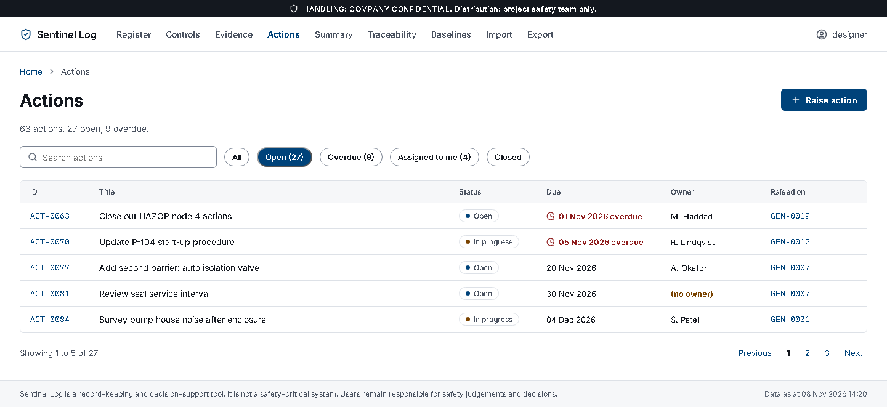

UC-8: Raise and close actions. Actor: Owner / manager
Main flow
- editor opens UAT-0001 controls and actions tab; tab lists UACT-0001 open with owner and due date (req-22).
- editor opens the actions list; list pill counts name open and overdue actions and UACT-0002 carries the overdue flag (req-23).
- editor opens UACT-0002; detail page carries the overdue flag with owner and due date (req-23).
- editor opens UACT-0003; detail page shows closed status with closure evidence text (req-22).
- editor creates an action from the UAT-0001 page; product allocates a fresh identifier server-side (req-22).
Stills
